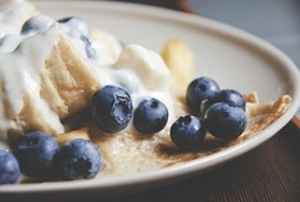
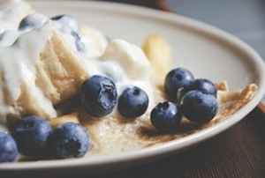

Pannekoeken
Ingredienten voor 4 personen
-250 gram bloem
-1 theelepel zout
-2 grote eirenen
-0.5 liter melk
- boter om mee te bakken
bereidingswijze
Doe de bloem met het zout, de eieren en de helft van de melk
in een kom en meng met de garde of met de mixer tot een glad beslag.
Meng er de resterende melk door en laat het beslag circa 30 minuten rusten.
Verhit een klontje boter in een koekenpan met een dikke bodem en een anti-aanbaklaag.
Schep een dun laagje beslag in de pan en draai de pan rond zodat het beslag
gelijkmatig over de bodem kan uitlopen. Laat de pannenkoek op middelhoog vuur
circa 3 minuten bakken tot de onderkant gekleurd en de bovenkant droog is. Keer met
behulp van een paletmes, een spatel of een pannendeksel om en laat de onderkant in
circa 1 minuut goudbruin bakken. Laat de pannenkoek uit de pan op een platte schaal
glijden en bak de overige pannenkoeken op dezelfde manier. Houd de gebakken pannenkoeken,
warm op een pan met heet water of in een op 100?C voorverwarmde oven.
Of warm ze op in de magnetron.
 
